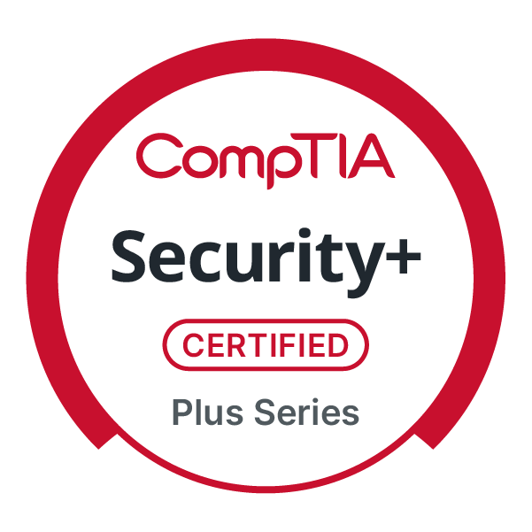
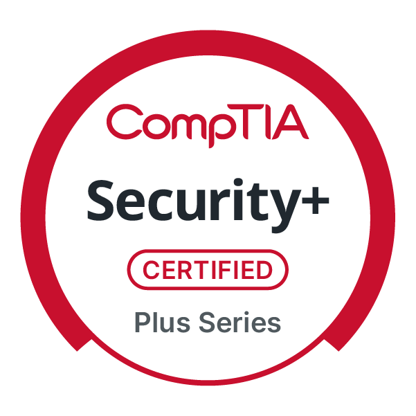
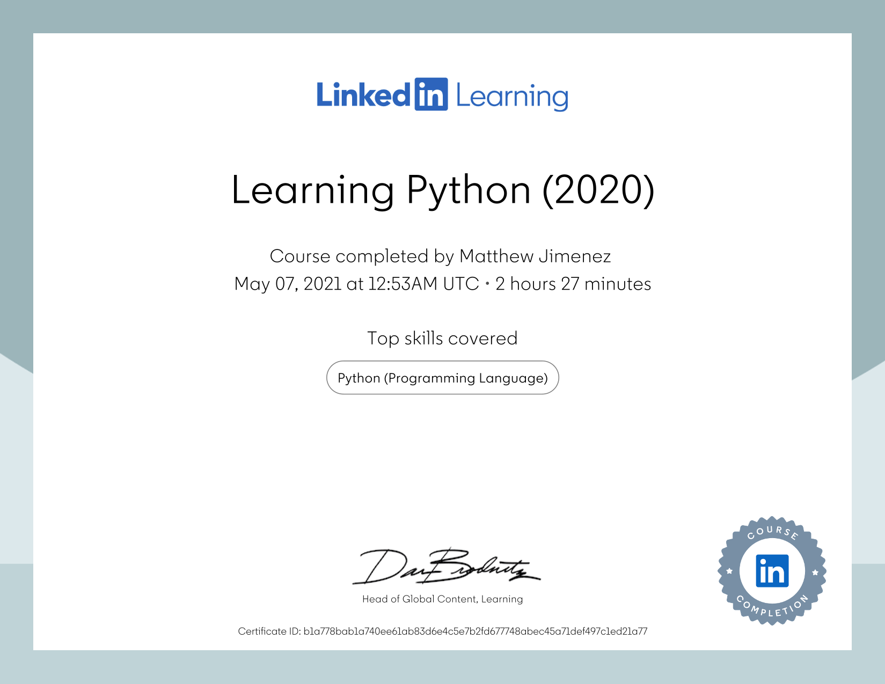
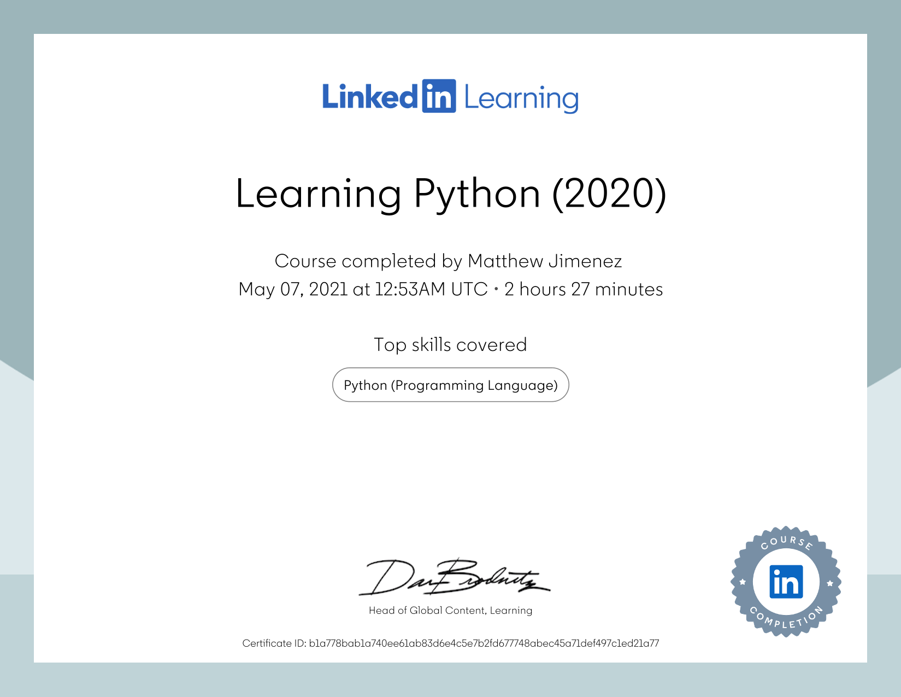
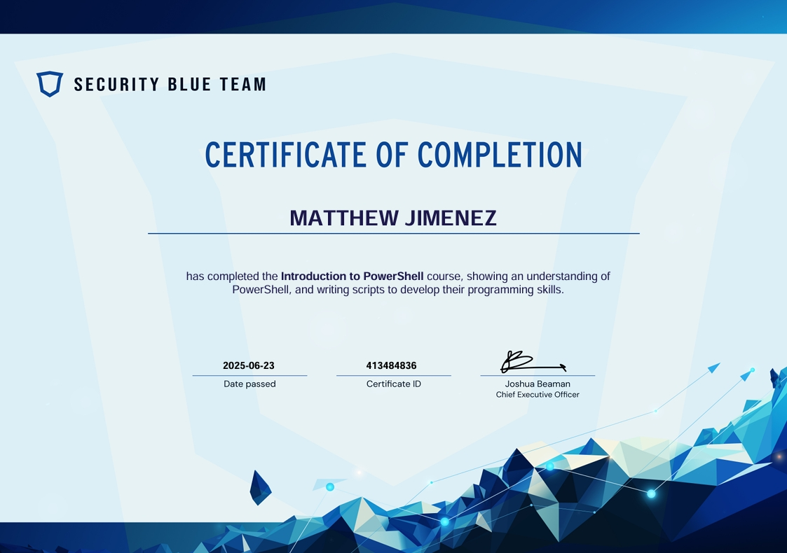
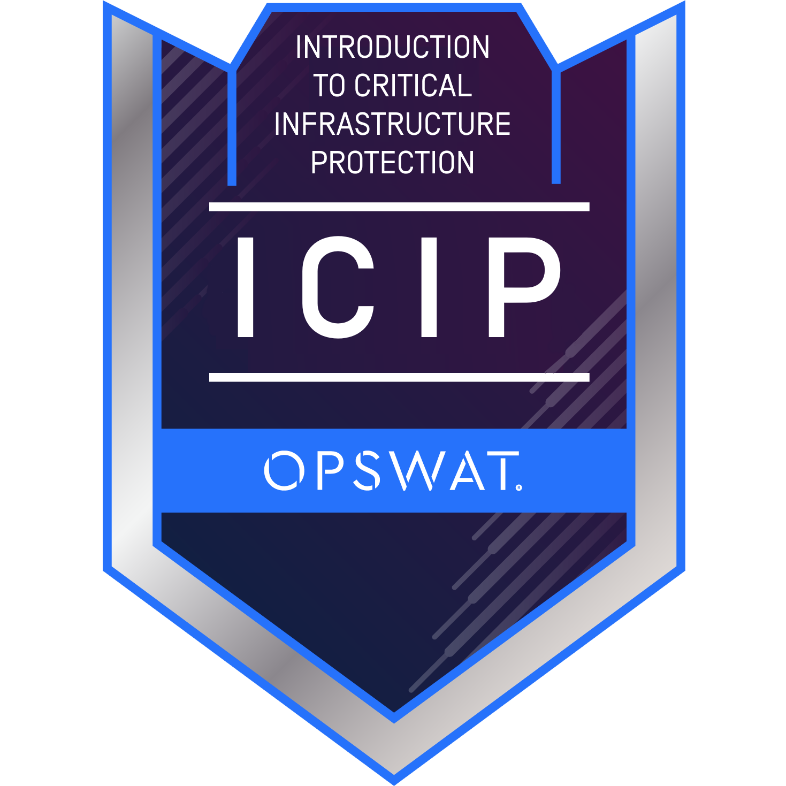
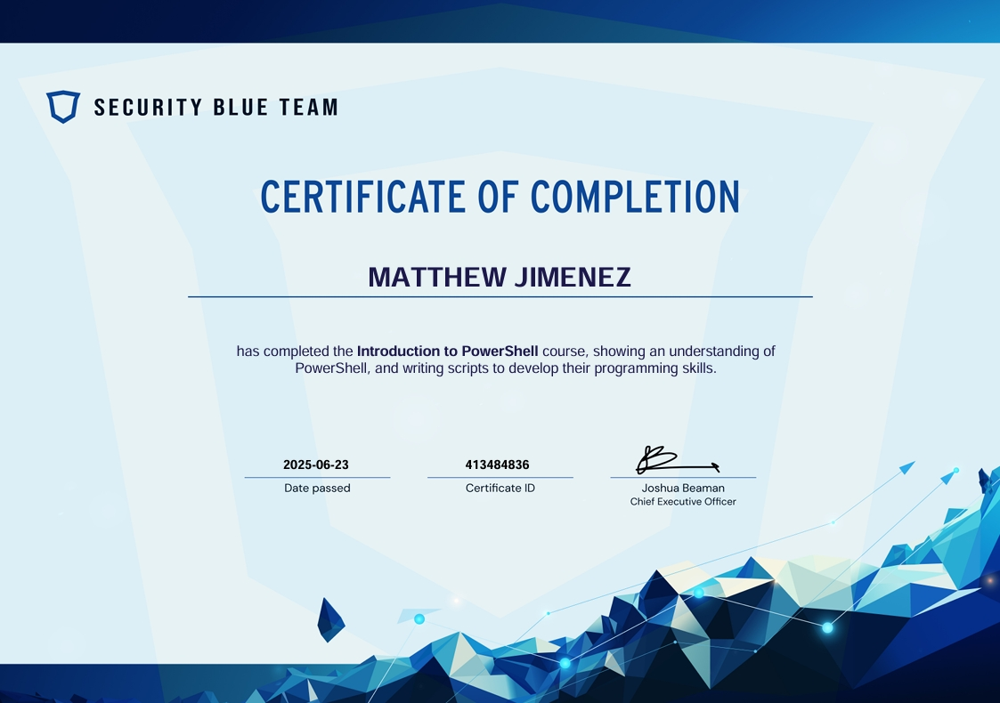
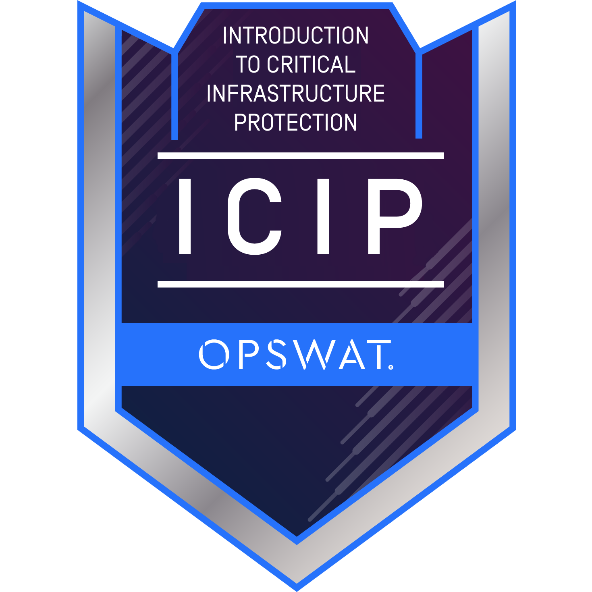

About Me

Hi, I’m Matthew Jimenez — an IT professional with 10+ years in technical support, now shifting into cybersecurity. I’ve worked across MSPs and enterprises like Allied Universal, specializing in access management and scripting. Through Correlation One’s DS4A and CS4A programs, I’ve sharpened my skills in data analytics, OSINT, and security tooling. I enjoy simplifying complex topics and creating real-world projects like phishing simulators and Azure AD hardening labs. Proud dad, Scottie owner, and gamer at heart — I’m eager to grow with a security-first team.
Skills
Technical Skills
- Python Programming
- PowerShell Scripting
- Windows Server Administration
- Network Security
- Security+ Certified
- SQL & Data Management
- Data Analysis
- Cloud Services
Professional Skills
- Microsoft 365 & SharePoint
- Active Directory Management
- Mobile Device Management (iOS/Android)
- ServiceNow & ConnectWise
- Access Management
- Documentation & SOPs
- Technical Support
- System Administration
Experience
IT Security Analyst – Allied Universal
Via Robert Half | May 2023 – June 2025
- Aided internal customers with hardware/software issues
- Maintained hardware (PCs, notebooks, printers)
- Provided app training & support
- User account admin and network security tasks
Sr. End User Support Specialist – Rivian
Plymouth, MI | May 2021 – Feb 2023
- Microsoft 365 and SharePoint setup/licensing
- Account management via Active Directory
- Remote support for BYOD devices (iOS/Android)
- ServiceNow ticketing, documentation, and SOPs
T1 Support Engineer – Integritek
Covina, CA | Jun 2019 – Mar 2021
- Remote and on-site tech support for SMB clients
- Windows OS, Office365, printer troubleshooting
- ConnectWise ticketing and Active Directory support
L1 Service Desk Analyst – Taco Bell Corp.
Irvine, CA | Aug 2017 – Jun 2019
- First-level phone/chat/email tech support
- LAN/WAN and vendor dispatch coordination
- Remote install and support of computer peripherals
Computer Support Engineer – Pricon Enterprise
Anaheim, CA | Oct 2014 – Aug 2017
- Setup and upgrades for iOS/Android government devices
- Active Directory management and remote support
- Office apps and peripheral device troubleshooting
Experience
Access Management Analyst – Allied Universal
Via Robert Half | 2023 – Present
- Provisioned/deprovisioned access to enterprise systems
- Maintained compliance and access reviews
IT Technician – MSP Roles
2015 – 2022
- Supported hundreds of users across SMB clients
- Diagnosed system and network issues
- Deployed software, hardware, and cloud tools
Education & Certifications
- CompTIA Security+ Certified
- CS4A – Cybersecurity (Correlation One)
- DS4A – Data Science (Correlation One)
- OPSWAT Introduction to Critical Infrastructure Protection
- Introduction to Penetration Testing
- PowerShell Course Completion
 


 

 



Projects
See GitHub: matt-jimenez.github.io
Resume
Download My Resume (PDF)Contact
Email: jimenez_m88@outlook.com
LinkedIn: mattajimenez
GitHub: Matt-Jimenez